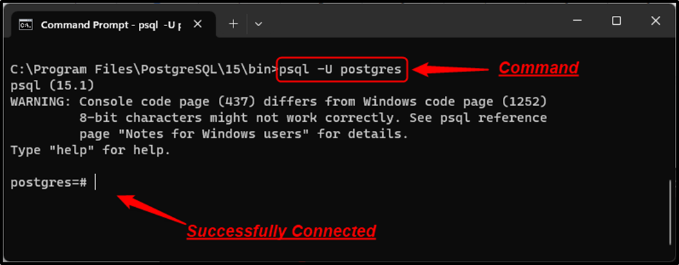

Guia de Replicação Streaming PostgreSQL (Windows - Versão sem testes)
PASSO 1: Configuração da Replicação (Windows)
Com sua Ficha de Informações preenchida, podemos começar a configuração.
1.1. Etapa 1: Configuração do Servidor PRIMÁRIO
1.1.1. Criar Usuário de Replicação No servidor Primário, acesse o psql como superusuário e execute, usando a senha da sua Ficha:
Método 1: Usando o atalho "SQL Shell (psql)" (Recomendado)
Abra o Menu Iniciar do Windows.
Procure pela pasta chamada PostgreSQL, que geralmente inclui o número da versão (ex: PostgreSQL 14).
Dentro desta pasta, clique em "SQL Shell (psql)".
Uma janela de terminal irá se abrir e solicitará as informações de conexão. Você pode simplesmente pressionar Enter para aceitar os valores padrão para
- Servidor (localhost)
- Banco de Dados (postgres)
- Porta (5432)
- Usuário (postgres)
Por último, ele pedirá a Senha para o usuário postgres. Digite a senha que você definiu durante a instalação do PostgreSQL e pressione Enter.
O que você deve ver:
psql (14.11 (Ubuntu 14.11-0ubuntu0.22.04.1))
Digite "help" para ajuda.
postgres=#

IMAGEM DE OUTRA VERSÃO WINDOWS. POSSIVELMENTE O SEU ESTARÁ DIFERENTE.
O prompt postgres=# a confirmação visual de que você está dentro do PostgreSQL como o superusuário postgres.
**Para sair do psql e voltar ao terminal normal, digite \q e pressione Enter.**
Método 2: Usando o Prompt de Comando (CMD)
Se preferir usar o Prompt de Comando padrão, você precisa navegar até a pasta de instalação do PostgreSQL.
Abra o Prompt de Comando (CMD).
Navegue até o diretório bin da sua instalação do PostgreSQL. Lembre-se de substituir "14" pela sua versão:
cd "C:\Program Files\PostgreSQL\\bin"
Execute o seguinte comando para se conectar como o usuário postgres:
psql -U postgres
psql.exe: É o programa que você quer rodar.
-U postgres: Especifica que você quer se conectar como o usuário postgres.
O sistema solicitará a senha do usuário postgres. Digite-a e pressione Enter. Assim como no outro método, você verá o prompt postgres=# confirmando o acesso.
O prompt postgres=# é a confirmação visual de que você está dentro do PostgreSQL como o superusuário postgres.
No Linux, o PostgreSQL geralmente cria um usuário no próprio sistema operacional chamado postgres. A forma mais fácil e segura de acessar o psql é "personificar" esse usuário por um momento.
SQL (No terminal postgres=# mostrado na imagem)
CREATE ROLE WITH REPLICATION LOGIN PASSWORD '';
Editar Arquivo postgresql.conf (Arquivo de configurações padrão do postgres)
Comando para abrir (Windows - CMD/prompt):
notepad "C:\Program Files\PostgreSQL\\data\postgresql.conf"
Encontre (Linux = ctrl + w // windows = ctrl + f), descomente (remova o #) e edite as seguintes linhas (Pré-existentes nos arquivos de configuração padrão do postgres):
- listen_addresses = '*'
- wal_level = replica
- max_wal_senders = 10
- wal_keep_size = 256MB (se o seu banco de dados for muito robusto, aumente conforme necessário. Ex: 90GB de dados = 4056MB)
5.1.3. Editar Arquivo pg_hba.conf (Arquivo de configurações padrão do postgres)
Comando para abrir (Windows - CMD):
notepad "C:\Program Files\PostgreSQL\\data\pg_hba.conf"
Adicione esta linha no final, usando o IP da Réplica da sua Ficha:
host replication /32 scram-sha-256
(remova o <> também. Deixe apenas a informação)
5.1.4. Reiniciar Serviço do Primário
Windows (CMD como Admin):
net stop postgresql-x64-
E depois (windows):
net start postgresql-x64-
5.2. Etapa 2: Preparação do Servidor RÉPLICA
5.2.1. Parar e Limpar o Serviço na Réplica (CUIDADO! Recomendação: Usar um servidor réplica VAZIO, pois uma das ações será limpar todos os dados do banco de dados presentes nele!)
Windows (CMD como Admin):
net stop postgresql-x64-
cd "C:\Program Files\PostgreSQL\"
rmdir /s /q data
mkdir data
5.2.2. Executar o Backup (pg_basebackup) no terminal da Réplica, execute o comando usando o IP do Primário da sua Ficha (OBS: Se o seu servidor for muito grande e ler uma quantidade exorbitante de dados, vai demorar umas boas horas para completar. Veja o que fazer na sessão dicas.):
Windows (CMD, na pasta C:\Program Files\PostgreSQL\14\bin, onde tem postgresql=#):
pg_basebackup.exe -h -U -p 5432 -D "C:\Program Files\PostgreSQL\\data" -Fp -Xs -P -R
O comando pedirá a senha do usuário [usuario] que você anotou.
5.3. Etapa 3: Finalização e Verificação
5.3.1. Iniciar Serviço na Réplica
Windows (CMD como Admin):
net start postgresql-x64-
5.3.2. Verificar Status no Primário No Primário, acesse o psql (OBS: Como fazer isso está no início da documentação) e rode:
No terminal SQL (postgres=#)
SELECT * FROM pg_stat_replication;
Resultado esperado: Uma linha com o IP da Réplica e state como streaming.
5.3.3. Verificar Status na Réplica, acesse o psql (OBS: Como fazer isso está no início da documentação) e rode:
No terminal SQL (postgres=#)
SELECT pg_is_in_recovery();
Resultado esperado: A consulta deve retornar t (true).
5.3.4. Teste Funcional (Sempre no terminal SQL)
No Primário, crie uma tabela:
CREATE TABLE teste_final (id INT);
Insira um dado:
INSERT INTO teste_final VALUES (100);
Na Réplica, verifique se o dado apareceu:
SELECT * FROM teste_final;
Se você vir o dado na Réplica, sua configuração está funcionando perfeitamente!
6. Solução de Problemas Comuns (Troubleshooting)
Encontrou um erro? Esta seção lista os problemas mais frequentes e suas soluções exatas. Use-a se a replicação não iniciar ou o status não for "streaming".
Problema 6.1: Conexão Recusada devido à String de Conexão Complexa
A replicação falha ou a Réplica não consegue conectar, mesmo com todas as configurações parecendo corretas.
Causa: A *connection string* no arquivo postgresql.conf da Réplica (gerada pelo pg_basebackup ou editada manualmente) está muito longa e contém parâmetros desnecessários de segurança (SSL, GSSAPI) que causam falha na negociação de autenticação.
Solução (Melhor Prática): Edite o postgresql.conf da Réplica e simplifique a string primary_conninfo para o essencial: host, port, user e password.
Comando para abrir o arquivo na Réplica (Linux):
sudo nano /var/lib/postgresql//main/postgresql.conf
No arquivo, edite a linha primary_conninfo para o formato abaixo e REINICIE o serviço.
primary_conninfo = 'host= port=5432 user= password='
Problema 6.2: Erro de Permissão do Sistema (SUDOERS)
Ao usar comandos como sudo ou sudo -u postgres, o terminal retorna [usuário] is not in the sudoers file.
Causa: Seu usuário não possui privilégios de administrador (sudo) para executar o comando. Essa permissão é fundamental para gerenciar o serviço PostgreSQL.
Solução: Adicione seu usuário ao grupo sudo. Após rodar o comando, você deve reiniciar o terminal ou fazer logoff/login para que a alteração tenha efeito.
Comando para adicionar o usuário ao grupo sudo:
sudo usermod -aG sudo [seu_usuario]
Problema 6.3: "Connection Refused" ou "Timeout"
O pg_basebackup falha ou o Servidor Réplica não consegue se conectar ao Primário. (Verifique se o firewall é o problema antes de seguir para a próxima solução).
Causa 1: Firewall. O firewall do Primário (UFW, iptables, etc.) está bloqueando a porta **5432**.
Solução 1: Libere a porta no Primário.
Comando para liberar a porta no Primário (Ex: UFW):
sudo ufw allow 5432/tcp
Causa 2: `listen_addresses`. O PostgreSQL no Primário não está configurado para "escutar" conexões externas.
Solução 2: Edite o postgresql.conf do Primário e defina: listen_addresses = '*'. Você deve **reiniciar** o serviço após essa mudança (sudo systemctl restart postgresql).
Problema 6.4: Replicação Atrasada ou Parada (WALs Não Encontrados)
A replicação começa, mas para depois de um tempo ou retorna erros como "could not find block..." ou "no more WAL segments".
Causa: O Servidor Primário está reciclando os arquivos de log (WALs) muito rápido (o `wal_keep_size` é pequeno demais), antes que o Réplica consiga processá-los.
Solução: **Aumente o valor do `wal_keep_size`** no arquivo postgresql.conf do Primário. Se o volume for muito grande, aumente ainda mais (ex: 4096MB).
Causa 2: `wal_level` Inválido. O parâmetro não foi definido ou o serviço não foi reiniciado. **Solução:** No postgresql.conf do Primário, verifique se está **wal_level = replica** e **REINICIE o PostgreSQL**.
Problema 6.5: Acesso Negado ao Primário (Falha no `pg_basebackup`)
O Primário rejeita a conexão do usuário replicador, mesmo com a senha correta.
Causa: O Servidor Primário não tem a linha de permissão para o IP da Réplica no arquivo **pg_hba.conf**. Ou você não reiniciou o serviço do PostgreSQL após a edição.
Solução: Garanta que a linha de permissão (`host replication [usuário] [IP/CIDR] md5`) esteja no final do pg_hba.conf do Primário. Depois, **REINICIE o serviço do PostgreSQL** para que as novas regras entrem em vigor.
Comando para reiniciar o serviço no Primário (obrigatório após editar o `pg_hba.conf`):
sudo systemctl restart postgresql
Fazendo a Conexão no DBeaver (Visualização Recomendada)
Para verificar se a replicação está funcionando, o ideal é ter tanto o banco de dados original (Primário) quanto o espelho (Réplica) visíveis no DBeaver. Siga os passos abaixo.
Parte 1: Conectando ao Banco de Dados PRIMÁRIO (ThingsBoard)
Abra o DBeaver. A tela principal será parecida com as imagens que você me enviou, com o menu "Arquivo", "Editar", etc., na parte de cima e o painel "Navegador de banco de dados" à esquerda.
No canto superior esquerdo da janela, procure por um ícone que parece uma tomada de energia com um sinal de '+' sobre ele. Este é o botão de "Nova Conexão". Clique nele.
Alternativa: Se não encontrar o ícone, clique em "Banco de dados" no menu superior e depois em "Nova Conexão".
Uma nova janela "Conectar a um banco de dados" vai aparecer. Na lista, selecione PostgreSQL e clique no botão "Avançar" no final da janela.
Você estará na aba "Principal" das "Configurações de Conexão". Preencha os campos da seguinte forma:
Host: Coloque o IP do Servidor Primário que você anotou na sua Ficha de Informações.
Porta: Mantenha o valor padrão, que é 5432.
Base de Dados: Digite thingsboard. Este é o nome padrão do banco de dados que o ThingsBoard usa.
Autenticação: Mantenha "Nativa do Banco de Dados".
Nome de usuário: Digite postgres (ou o superusuário que você está usando).
Senha: Digite a senha deste usuário.
No canto inferior esquerdo da mesma janela, clique no botão "Testar conexão...". Uma janela de confirmação deve aparecer, mostrando os detalhes do driver e a versão do PostgreSQL. Se tudo estiver correto, clique em "OK".
Clique em "Concluir".
Resultado: Você verá sua nova conexão aparecer no painel "Navegador de banco de dados" à esquerda. Ela terá um nome como thingsboard. Você pode clicar com o botão direito sobre ela e escolher "Renomear" para algo mais descritivo, como [PRIMÁRIO] ThingsBoard DB.
Parte 2: Conectando ao Banco de Dados RÉPLICA (Banco Espelho)
Agora, para adicionar o Banco Espelho, você vai repetir exatamente os mesmos passos (do 1 ao 6) acima, alterando apenas as seguintes informações no Passo 4:
Host: Desta vez, coloque o IP do Servidor Réplica que você anotou.
Base de Dados: Deixe o padrão postgres (ou digite thingsboard se o backup inicial já foi feito).
Nome de usuário/Senha: Use o usuário e senha correspondentes ao seu servidor Réplica.